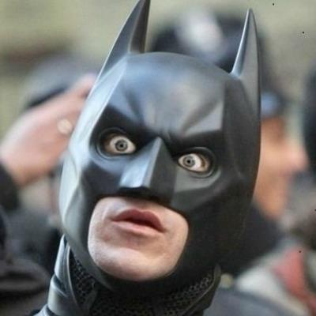
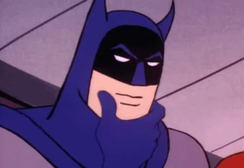
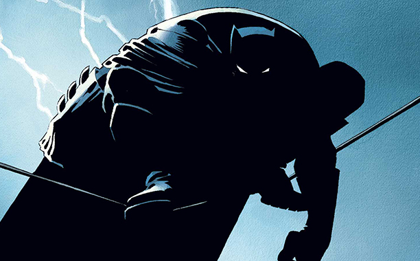

Reintentar
"Señorito Luminoso"
Tus actitudes estan lejos de las de un Dark Knight, pero bueno, siempre se puede ser un Alfred.
Reintentar
"Caballero Dudoso"
A Batman le costaria definirte. Un par de noches por Gotham o Lanús terminaria tu formación.
Reintentar
"Señorito Luminoso"
Tus actitudes estan lejos de las de un Dark Knight, pero bueno, siempre se puede ser un Alfred.